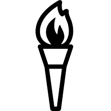
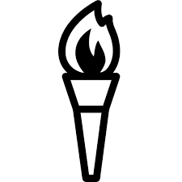

.jpg) 



DATE |
TAGS |
BARRA, DEODORO, MARACANÃ AND COPACABANA ARE THE NAMES OF THE FOUR COMPETITION
ZONES THAT WILL HOST THE RIO 2016 OLYMPIC GAMES. THEY WILL BE LINKED TO EACH OTHER
BY A HIGH-CAPACITY TRANSPORT NETWORK. NEARLY HALF OF THE ATHLETES COMPETING AT
THE GAMES WILL BE ABLE TO REACH THEIR VENUES IN LESS THAN TEN MINUTES AND 75
PERCENT IN UNDER 25.
There are 32 competition venues in Rio. Six of them were already operational and additional nine have undergone refurbishment. Ten are permanent new sites that will create a lasting legacy for the city and seven are temporary. Some of the competition locations were built in 2007 for the XV Pan-American Games.
Similarly to Homebush Bay at Sydney 2000, the OAKA at Athens 2004, the Olympic Green at Beijing 2008 and the Olympic Park at London 2012, the neighbourhood of Barra de Tijuca will provide the setting for the largest number of disciplines, 23 in total. Situated in the western part of the city, on the site of the old Jacarepagua Formula One racetrack, the Barra zone features 15 competition venues and also the International Broadcasting Centre/Main Press Centre (MBC/IBC), the Olympic Village and the Olympic Park.
The Olympic Park is home to the Carioca Arenas 1, 2 and 3 (hosting basketball, judo, taekwondo, wrestling and fencing), the Future Arena (handball), the Olympic Tennis Centre, the Rio Olympic Velodrome (track cycling), the Rio Olympic Arena (artistic gymnastics, rhythmic gymnastics and trampoline), the Maria Lenk Aquatics Centre (diving, synchronised swimming and water polo preliminary games) and the all-new Olympic Aquatics Stadium, where the swimming events and water polo finals will be held.
The Barra zone also includes the Riocentro complex and pavilions (boxing, table tennis, badminton and weightlifting) and, located further south, the Olympic Golf Course. Meanwhile, the beachside location of Pontal will provide the start point for the cycling road time-trials and athletics walk events.
In the north of the city lies the Deodoro zone, which comprises the Whitewater Stadium (canoe slalom), the Olympic Mountain Bike, BMX, Shooting, Equestrian and Hockey centres, the Youth Arena (will stage women’s group stage basketball matches and the modern pentathlon fencing), and the Deodoro Stadium - the venue for rugby sevens and the modern pentathlon showjumping, combined pistol shooting and cross-country run events.
The Barra and Deodoro zones will be linked by a new 26km highway known as the TransOlimpica, a Bus Rapid Transit (BRT) line.
In the east are the Maracanã and Copacabana zones. The legendary Maracanã Stadium will host the Opening and Closing Ceremonies as well as the football finals (plus one men’s and one women’s semi-final). Meanwhile the Olympic Stadium, another of the football venues, will also provide the setting for the track and field events. The famous Sambódromo (in the Maracanã zone) will stage the start and finish of the marathon as well as the archery competitions whilethe Maracanãzinho (Little Maracanã) will host the volleyball competition.
In the Copacabana zone, the sailing will unfold at the Marina de Glória, with the rowing and canoe sprint competitions taking place at the Lagoa Stadium at Lagoa Rodrigo de Freitas. The Beach Volleyball Arena is a temporary venue on Copacabana Beach, while Fort Copacabana will play host to the start and finish of the cycling road races, the triathlons and the open-water marathons.
As at previous Summer Games, the football tournaments will be held around the country, with Salvador, Brasilia, Belo Horizonte, Manaus and São Paulo providing additional venues.